Distanța dintre titlu și design
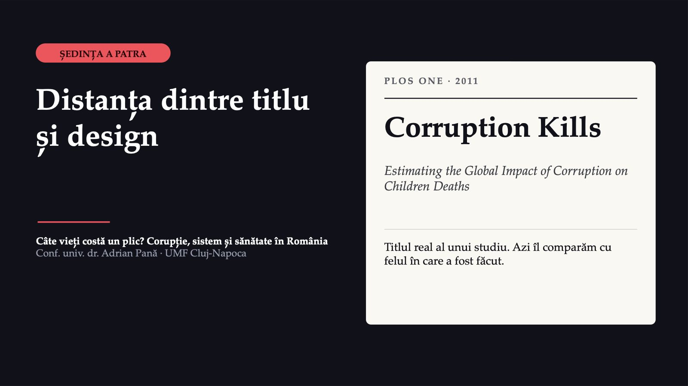
1 / 46Distanța dintre titlu și design. Azi pornim de la un titlu de două cuvinte, „Corupția ucide”, și măsurăm de trei ori cât de departe poate fi titlul unui studiu de felul în care a fost făcut.
Ce am schimbat după răspunsurile voastre
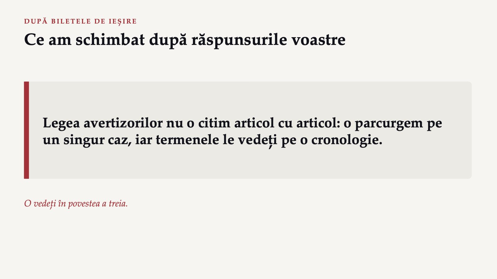
2 / 46Am schimbat felul în care prezentăm legea. Legea avertizorilor nu o citim articol cu articol, ci o parcurgem pe un singur caz, iar termenele le vedeți pe o cronologie, nu într-un paragraf de lege.
Trei povești și o dezbatere
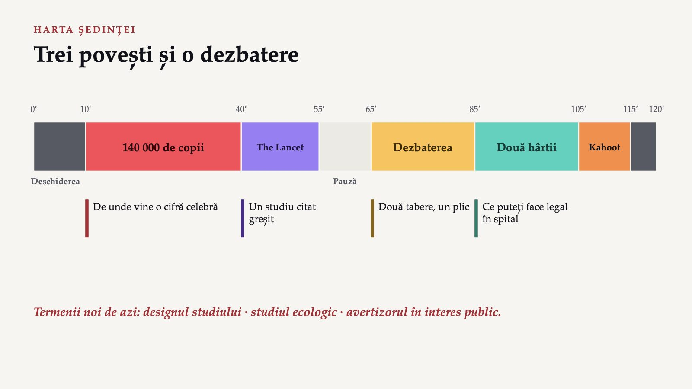
3 / 46Trei povești și o dezbatere. Prima: de unde vine cifra de 140 000 de copii. A doua: un studiu mare despre democrație, citat uneori ca dovadă despre corupție. După zece minute de odihnă, dezbaterea, apoi a treia poveste: ce puteți face, legal, când vedeți ceva în neregulă în spital. Jumătate din timp lucrați voi.
peste 140 000
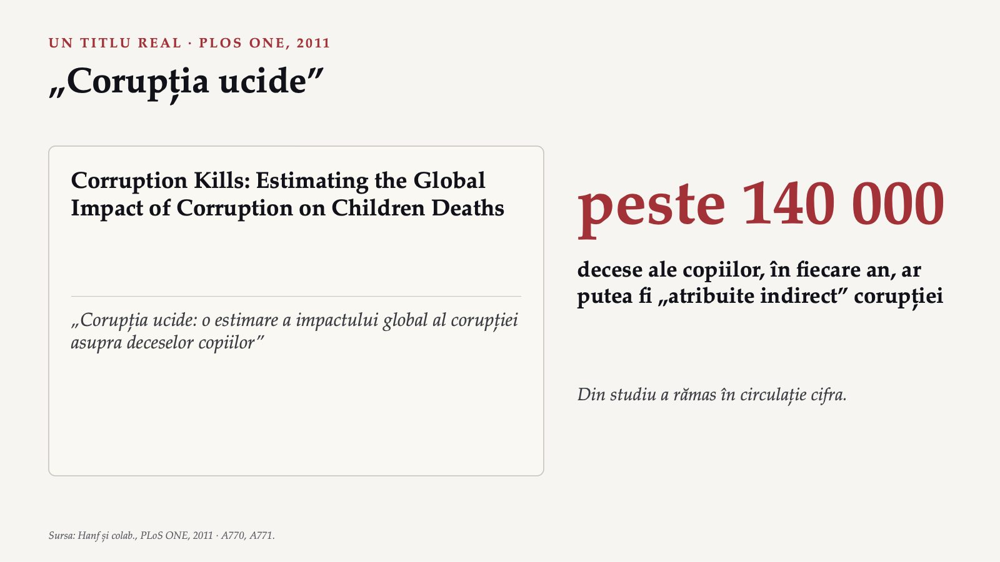
4 / 46În 2011, revista științifică PLoS ONE a publicat un studiu cu un titlu de două cuvinte, urmat de o promisiune: „Corupția ucide: o estimare a impactului global al corupției asupra deceselor copiilor”. Din studiu a rămas în circulație o cifră: peste 140 000 de decese ale copiilor, în fiecare an, ar putea fi atribuite indirect corupției.
Ați crede titlul „Corupția ucide”?
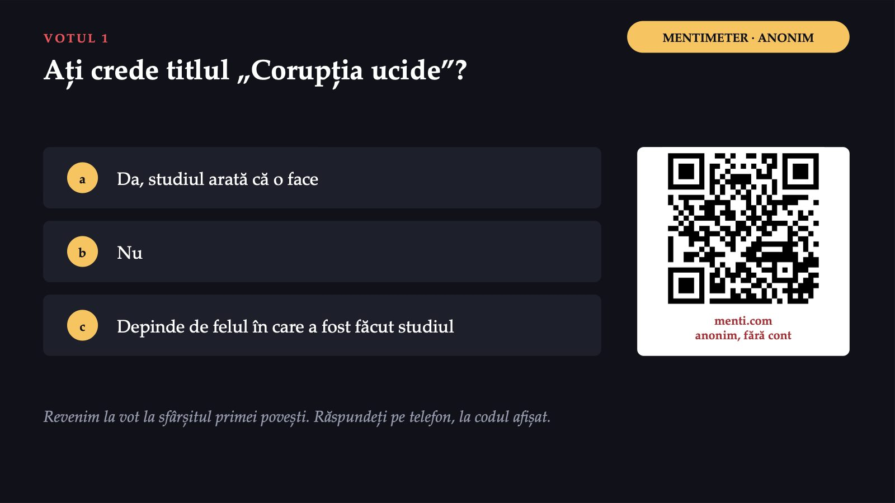
5 / 46Votați anonim, pe telefon, la codul afișat: ați crede titlul „Corupția ucide”? Revenim la vot la sfârșitul primei povești.
Câte vieți costă un plic?
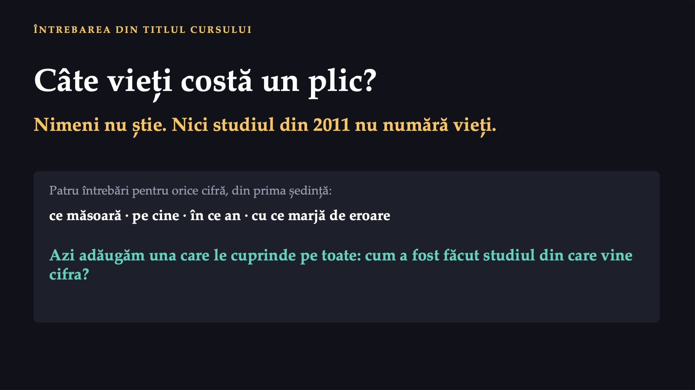
6 / 46Cursul acesta poartă o întrebare în titlu: câte vieți costă un plic? Vă datorăm răspunsul de la început, iar el nu s-a schimbat din ședința a doua: nimeni nu știe. Nici studiul din 2011 nu numără vieți. În prima ședință ați primit patru întrebări pentru orice cifră: ce măsoară, pe cine, în ce an și cu ce marjă de eroare. Azi adăugăm una, care le cuprinde pe toate: cum a fost făcut studiul din care vine cifra? Distanța dintre titlu și design o măsurăm de trei ori: pe un studiu despre copii, pe un studiu despre democrație și pe propria voastră relatare, când veți vedea ceva în neregulă în spital.
178 de țări, un singur an
![POVESTEA ÎNTÂI · 140 000 DE COPII 178 de țări, un singur an DOUĂ CIFRE DIN 2008, PENTRU FIECARE ȚARĂ Câți copii din 1 000 născuți vii mor înainte de 5 ani. Indicele de percepție a corupției, de la 0 la 10: un scor mai mare înseamnă corupție percepută mai mică. CINCI FACTORI ÎN MODELUL FINAL canalizarea cheltuielile pentru sănătate pe locuitor indicele corupției percepute clima aridă structura pe vârste a populației Indicele nu numără plicuri, ci impresii. Sursa: Hanf și colab., 2011 · A772, A773, A776.](diapozitive/C04/007.jpg) 7 / 46
7 / 46Autorii, o echipă al cărei prim autor este Matthieu Hanf, au pornit de la o întrebare legitimă: corupția poate deturna banii pentru apă curată, vaccinuri sau spitale, deci ar trebui să se vadă în sănătatea copiilor. Dar cât? Au luat 178 de țări și, pentru fiecare, două cifre din 2008: câți copii din 1 000 născuți vii mor înainte de 5 ani și scorul țării în indicele de percepție a corupției, același indice pe care l-ați întâlnit în prima ședință. Indicele nu numără plicuri, ci impresii. După ce au ținut cont de alte date despre țări, în model au rămas cinci factori, între care indicele corupției.
Cum credeți că au ajuns la cifra aceasta?
 8 / 46
8 / 46Ghiciți înainte de pasul următor și ridicați mâna la varianta voastră. Cum credeți că au ajuns autorii la cifra de peste 140 000 de decese pe an? Au numărat copiii morți în spitale unde s-au dovedit fapte de corupție, au comparat aceiași copii înainte și după o campanie anticorupție, au pornit de la cât de bine prezice un model statistic diferențele dintre țări sau au luat-o dintr-un raport al unei organizații internaționale?
Un model care prezice puțin mai bine
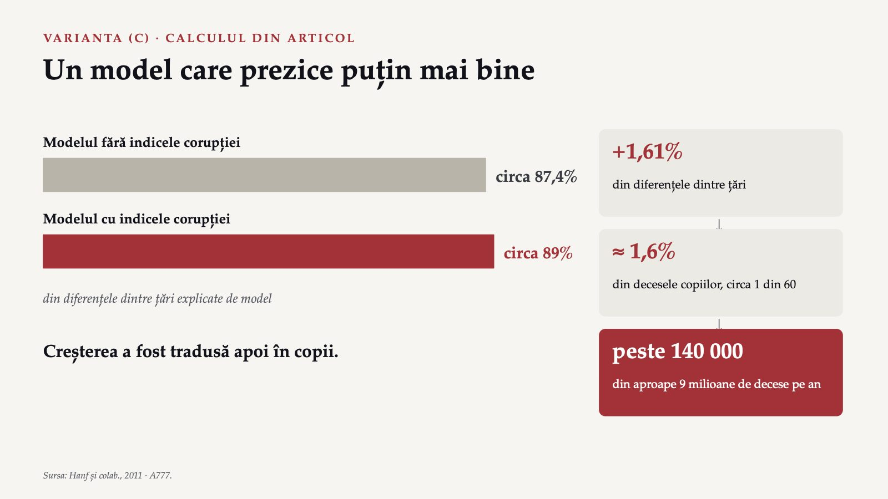
9 / 46Calculul este descris chiar în articol. Un model statistic încearcă să explice de ce unele țări au o mortalitate a copiilor mai mare decât altele. Varianta cu indicele corupției explica o parte puțin mai mare din diferențele dintre țări: de la circa 87,4% la circa 89%, adică, în cuvintele autorilor, cu 1,61%. Autorii au tradus apoi creșterea astfel: aproximativ 1,6% din decesele copiilor din lume, adică circa 1 din 60, ar putea fi explicate de corupție, iar din cele aproape 9 milioane de decese anuale ale copiilor, peste 140 000 ar putea fi atribuite indirect corupției. Varianta corectă era deci (c).
Despre model, nu despre copii
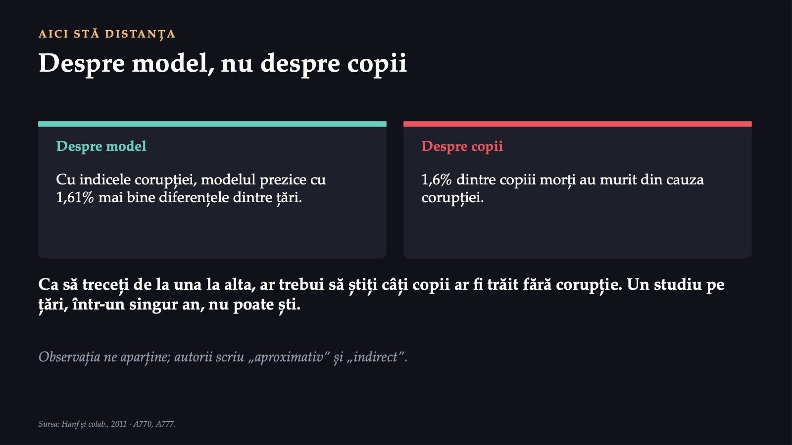
10 / 46Uitați-vă la acest pas cu atenție, pentru că aici stă distanța. O creștere cu 1,61% a proporției din diferențele dintre țări pe care un model o poate prezice este o afirmație despre model. A spune că 1,6% dintre copiii morți au murit din cauza corupției este o afirmație despre copii. Ca să treceți de la prima la a doua ar trebui să știți câți dintre acești copii ar fi trăit dacă țara lor n-ar fi fost coruptă, iar asta un studiu care compară țări într-un singur an nu poate ști. Observația aceasta ne aparține, nu autorilor. Autorii au fost prudenți în alt fel: au scris că s-ar putea formula aproximativ ipoteza și că decesele ar putea fi atribuite indirect.
Designul studiului
 11 / 46
11 / 46Primul termen nou: designul studiului. În acest curs numim designul unui studiu felul în care a fost făcut: pe cine a urmărit, oameni sau grupuri întregi, cum sunt țările, ce a măsurat, o singură dată sau de-a lungul timpului și dacă cercetătorii au intervenit sau doar au observat. În cuvinte de zi cu zi: rețeta studiului. Designul nu se citește din titlu, ci din secțiunea despre metodă. Pentru studiul lui Hanf, ea are trei informații de care aveți nevoie: unitatea comparată este țara, nu copilul; datele sunt dintr-un singur an; corupția este măsurată prin percepție.
Studiul ecologic
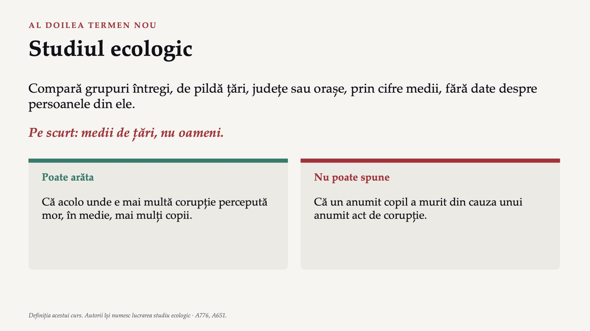
12 / 46Al doilea termen nou: studiul ecologic. În acest curs numim studiu ecologic un studiu în care se compară grupuri întregi de oameni, de pildă țări, județe sau orașe, folosind o cifră medie pentru fiecare grup, fără date despre persoanele din el. Autorii își numesc ei înșiși lucrarea un studiu ecologic și scriu că asemenea studii au limite: erori sistematice, factori care încurcă comparația, un singur an de date și variabile importante care nu au putut fi incluse. Un studiu ecologic poate arăta că acolo unde e mai multă corupție percepută mor, în medie, mai mulți copii. Nu poate spune că un anumit copil a murit din cauza unui anumit act de corupție.
Patru țări pe un grafic
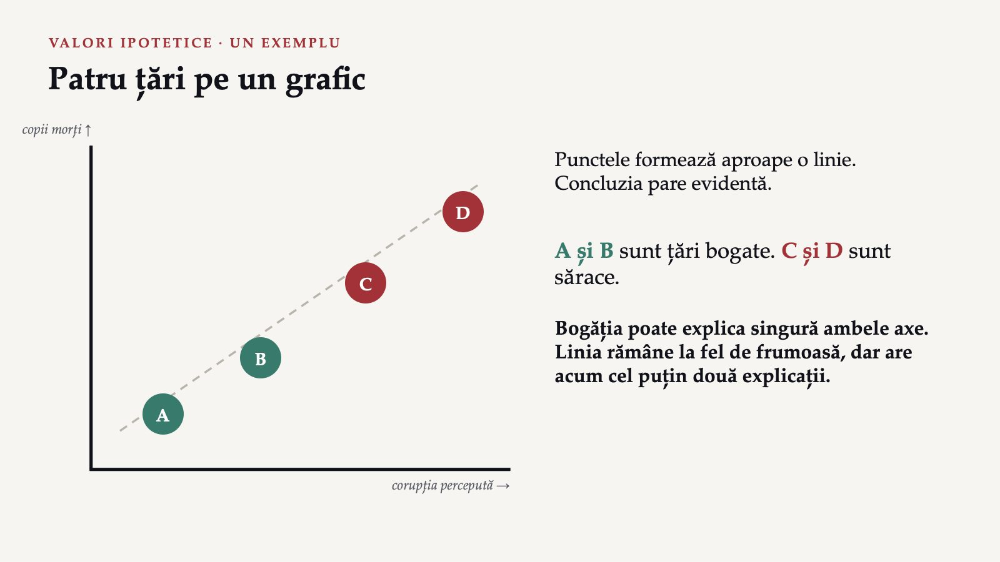
13 / 46Valori ipotetice. Puneți pe un grafic patru țări: pe orizontală, indicele corupției percepute; pe verticală, câți copii mor înainte de cinci ani. Țara A are corupție percepută mică și puțini copii morți. Țara D are corupție percepută mare și mulți copii morți. Punctele formează aproape o linie, iar concluzia pare evidentă. Acum aflați un lucru în plus: A și B sunt țări bogate, cu apă curentă și spitale bine dotate; C și D sunt sărace. Bogăția poate explica singură ambele axe. Linia de pe grafic rămâne la fel de frumoasă, dar acum are cel puțin două explicații.
0,82
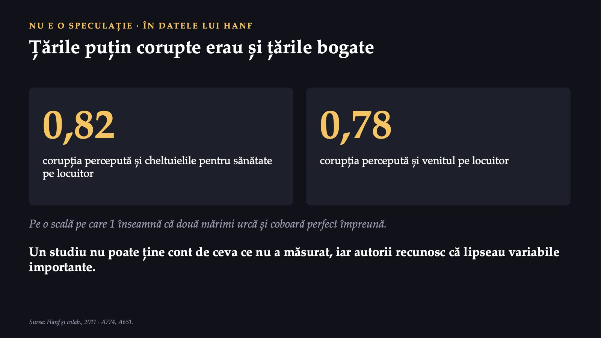
14 / 46Situația din exemplu nu este o speculație. În datele lui Hanf, indicele corupției percepute mergea foarte strâns cu cheltuielile pentru sănătate pe locuitor și cu venitul pe locuitor: coeficienții de corelație au fost de 0,82 și de 0,78, pe o scală pe care 1 înseamnă că două mărimi urcă și coboară perfect împreună. Mergea strâns și cu indicii libertăților civile și ai drepturilor politice. Țările percepute ca puțin corupte erau în mare parte aceleași cu țările bogate și libere. Autorii au ținut cont de cheltuielile pentru sănătate, ceea ce ajută, dar un studiu nu poate ține cont de ceva ce nu a măsurat.
„Dacă țările mai corupte au mai mulți copii morți, înseamnă că în fiecare țară copiii mor din cauza corupției.”
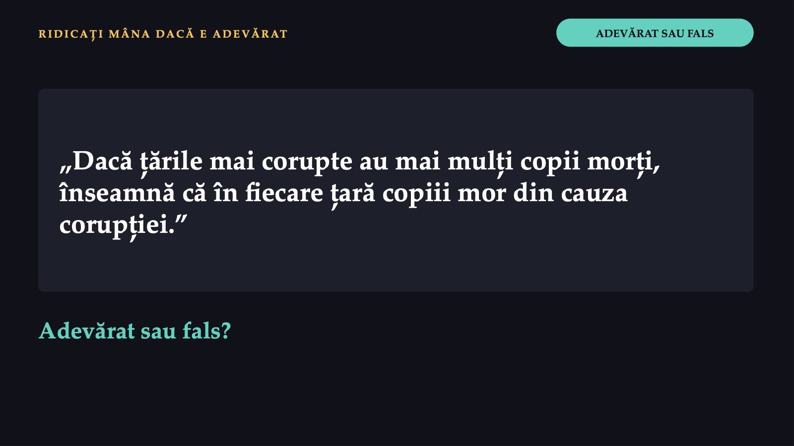
15 / 46Adevărat sau fals? Dacă țările mai corupte au mai mulți copii morți, înseamnă că în fiecare țară copiii mor din cauza corupției. Ridicați mâna dacă e adevărat.
Un studiu ecologic vorbește despre țări, nu despre copii
![FALS · TREI EXPLICAȚII POSIBILE Un studiu ecologic vorbește despre țări, nu despre copii 1 Corupția înrăutățește sănătatea copiilor. 2 Un al treilea factor le produce pe amândouă: sărăcia, strâns legată de corupția percepută. 3 Explicația inversă: autorii notează că, în diferite țări, corupția a fost și cauză, și consecință a sărăciei. În studiul din 2025, venitul național avea o legătură mai puternică cu mortalitatea evitabilă decât corupția. Sursa: Hanf, 2011 · A774, A779; studiul din 2025 · A652.](diapozitive/C04/016.jpg) 16 / 46
16 / 46Fals. Un studiu ecologic vorbește despre țări, nu despre copii, și nu exclude explicațiile comune. În ședința trecută ați întâlnit ideea că o asociere poate avea trei explicații. La țări, un candidat evident pentru al treilea factor este bogăția sau sărăcia lor: în datele lui Hanf, corupția percepută mergea strâns cu venitul pe locuitor, iar în studiul din 2025 venitul național avea o legătură mai puternică cu mortalitatea evitabilă decât corupția. Și explicația inversă este posibilă: autorii notează că, în diferite țări, corupția a fost și cauză, și consecință a sărăciei.
Varianta (c): depinde de felul în care a fost făcut studiul
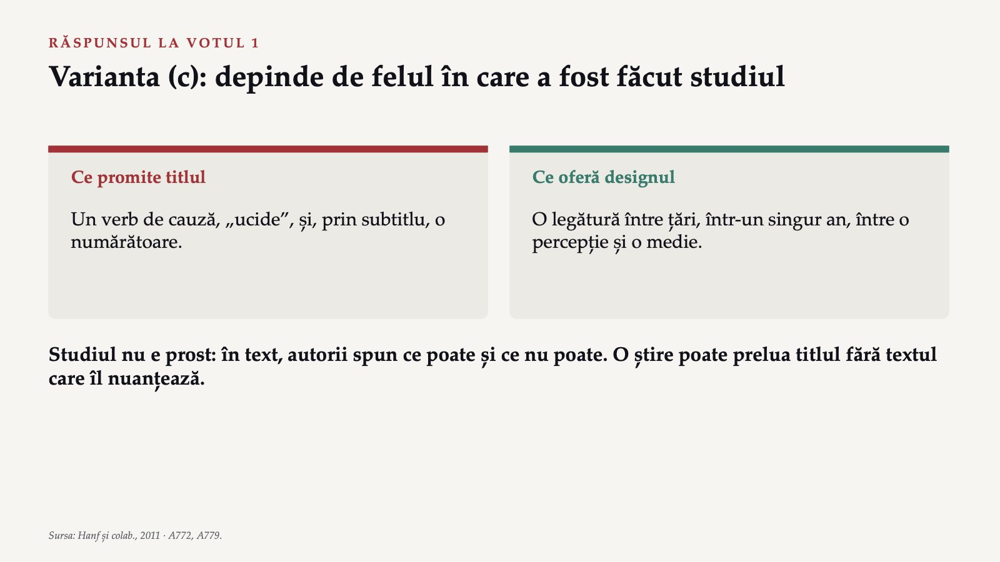
17 / 46Întoarceți-vă la votul de la început. Varianta pe care o susțin datele este (c): depinde de felul în care a fost făcut studiul. „Corupția ucide” are un verb care spune o cauză și, prin subtitlu, promite o numărătoare. Designul oferă altceva: o legătură între țări, într-un singur an, între o percepție și o medie. Nu înseamnă că studiul este prost sau că autorii au mințit. În interiorul articolului, ei spun ce poate și ce nu poate studiul; ba chiar cred că modelul lor, simplu, probabil subestimează efectele corupției. Distanța este între titlu și text, iar o știre poate prelua titlul fără textul care îl nuanțează.
Mai lung decât „corupția ucide”, dar adevărat
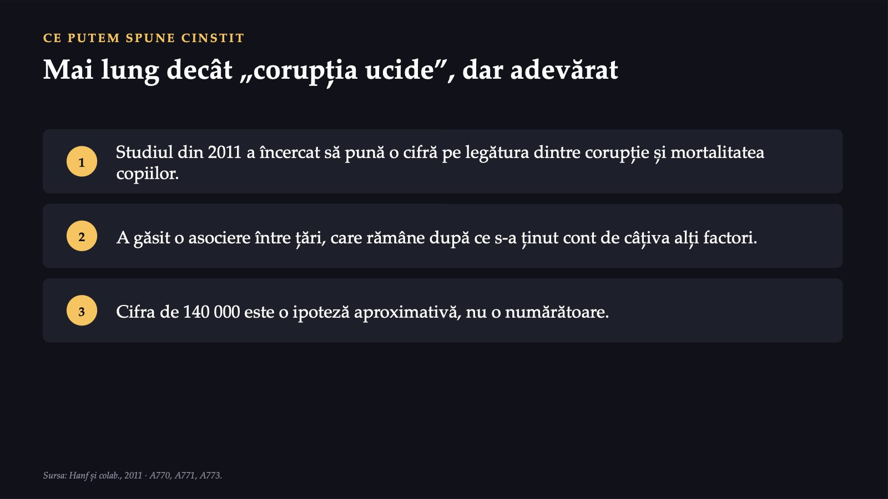
18 / 46Ce putem spune cinstit, atunci? Că studiul din 2011 a încercat să pună o cifră pe legătura dintre corupție și mortalitatea copiilor; că a găsit o asociere între țări, care rămâne după ce s-a ținut cont de câțiva alți factori; și că cifra de 140 000 este o ipoteză aproximativă, nu o numărătoare. Este mai lung decât „corupția ucide”, dar este adevărat. Un studiu din 2025, pe care îl vedem în povestea a doua, găsește o legătură asemănătoare în Europa Centrală și de Est, dar ca factor printre mai mulți.
Rescrieți titlul
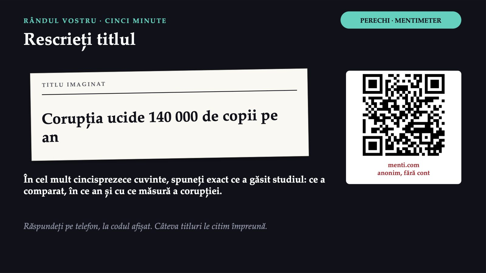
19 / 46Lucrați în perechi, cinci minute. Rescrieți titlul „Corupția ucide 140 000 de copii pe an” în cel mult cincisprezece cuvinte, astfel încât să spună exact ce a găsit studiul: ce a comparat, în ce an și cu ce măsură a corupției. Trimiteți titlul vostru pe telefon, la codul afișat. Câteva titluri le citim împreună și le judecăm cu aceleași întrebări: ce a măsurat, pe cine, o dată sau în timp?
O cifră spectaculoasă sau o frază adevărată
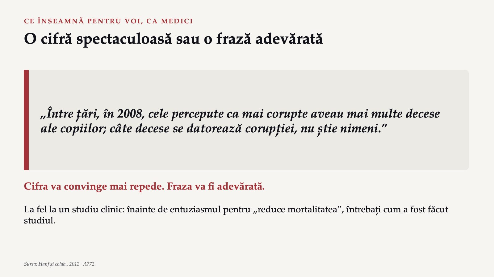
20 / 46Veți fi întrebați, la o gardă, la o masă în familie sau într-o discuție publică, dacă e adevărat că spitalele noastre omoară oameni din cauza șpăgii. Veți avea la îndemână o cifră spectaculoasă și o frază lungă și prudentă. Cifra va convinge mai repede. Fraza va fi adevărată. Cursul acesta vă cere să o alegeți pe a doua și să spuneți de unde vine. Același lucru este valabil când citiți un studiu clinic: un titlu care spune „reduce mortalitatea” vă cere o întrebare înainte de entuziasm: cum a fost făcut studiul?
170 de țări
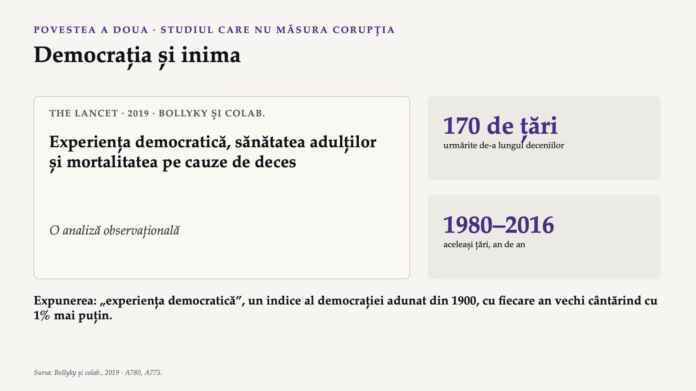
21 / 46În 2019, revista medicală The Lancet a publicat un studiu despre 170 de țări, între 1980 și 2016, cu un titlu lung și precis: relațiile dintre experiența democratică, sănătatea adulților și mortalitatea pe cauze de deces. Primul autor este Thomas Bollyky. Un articol retras din The Lancet, ca cel din ședința trecută, nu face revista nesigură: ce contează este designul fiecărui studiu și ce afirmă cel care îl citează. Spre deosebire de Hanf, autorii au urmărit aceleași țări de-a lungul a câteva decenii. Au construit experiența democratică a unei țări dintr-un indice internațional al democrației, adunat din 1900, iar fiecare an din trecut cântărește cu 1% mai puțin decât anul de după el.
+3%
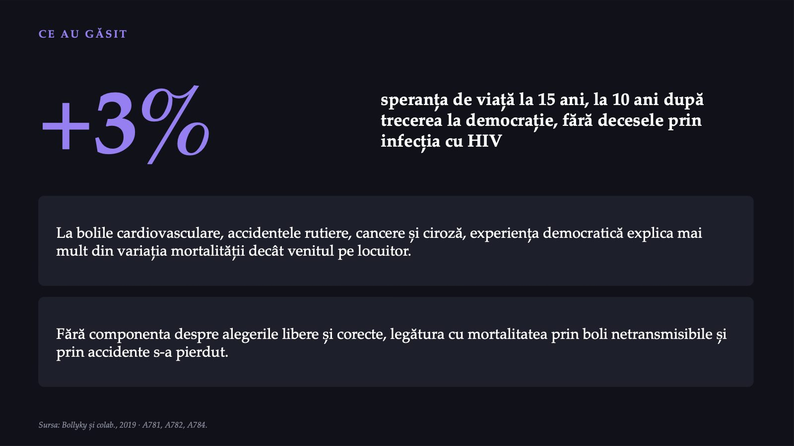
22 / 46Ce au găsit? După trecerea la democrație, speranța de viață la 15 ani, socotită fără decesele prin infecția cu HIV, a crescut în medie cu 3% după 10 ani. Pentru bolile cardiovasculare, accidentele rutiere, cancere, ciroză și alte boli netransmisibile, experiența democratică explica o parte mai mare din variația mortalității în interiorul unei țări decât venitul pe locuitor. Iar când au scos din indice componenta despre alegerile libere și corecte, legătura cu mortalitatea prin boli netransmisibile și prin accidente s-a pierdut.
Ce a măsurat, ca factor de expunere, studiul din The Lancet?
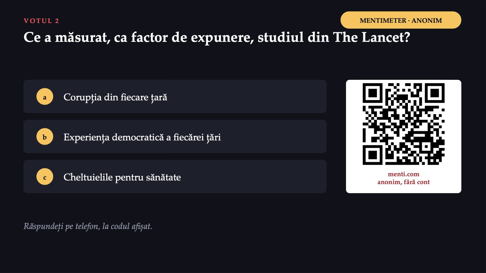
23 / 46Votați anonim, pe telefon, la codul afișat: ce a măsurat, ca factor de expunere, studiul din The Lancet? Corupția din fiecare țară, experiența democratică a fiecărei țări sau cheltuielile pentru sănătate?
Varianta (b): experiența democratică
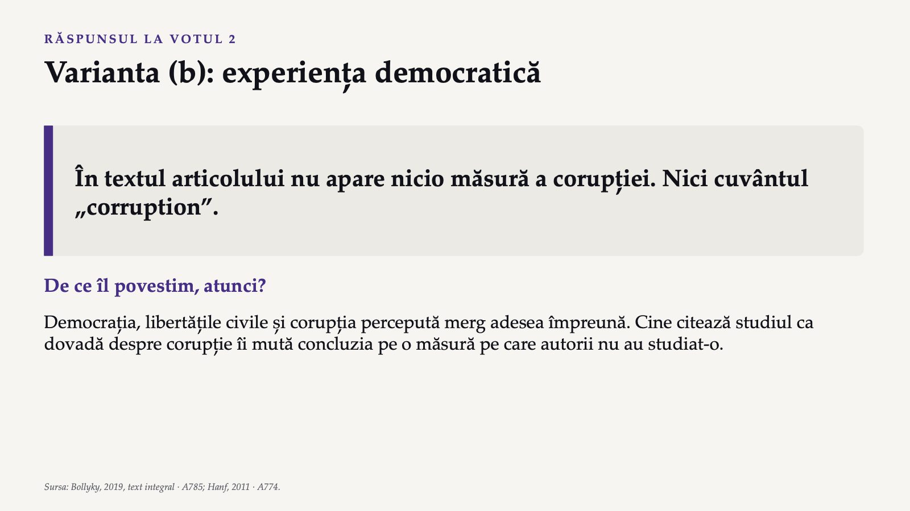
24 / 46Varianta corectă este (b). Experiența democratică este expunerea studiată, iar în textul articolului nu apare nicio măsură a corupției. Nici cuvântul în sine, în engleză, nu apare în textul integral. De ce povestim, atunci, acest studiu într-un curs despre corupție? Pentru că este ușor de folosit greșit. Democrația, libertățile civile și corupția percepută merg adesea împreună: chiar în datele lui Hanf, indicele corupției percepute era strâns legat de indicii libertăților civile și ai drepturilor politice. Să citați studiul ca dovadă despre corupție înseamnă să-i mutați concluzia pe o măsură pe care autorii nu au studiat-o.
Titlul promite prea mult sau citatul mută concluzia
 25 / 46
25 / 46Aceasta este a doua formă a distanței dintre titlu și design. În prima, titlul promitea mai mult decât putea da designul. În a doua, titlul este corect, dar cel care citează studiul îi atribuie o concluzie despre altceva. Și studiul acesta își spune limitele. Legătura dintre democrație și sănătate este greu de măsurat, scriu autorii, pentru că democrația merge împreună cu alți factori, cum sunt venitul țării sau cheltuielile pentru sănătate, și pentru că nu există date dintr-un experiment în care țările să fi fost repartizate la întâmplare.
Douăsprezece țări, între care România
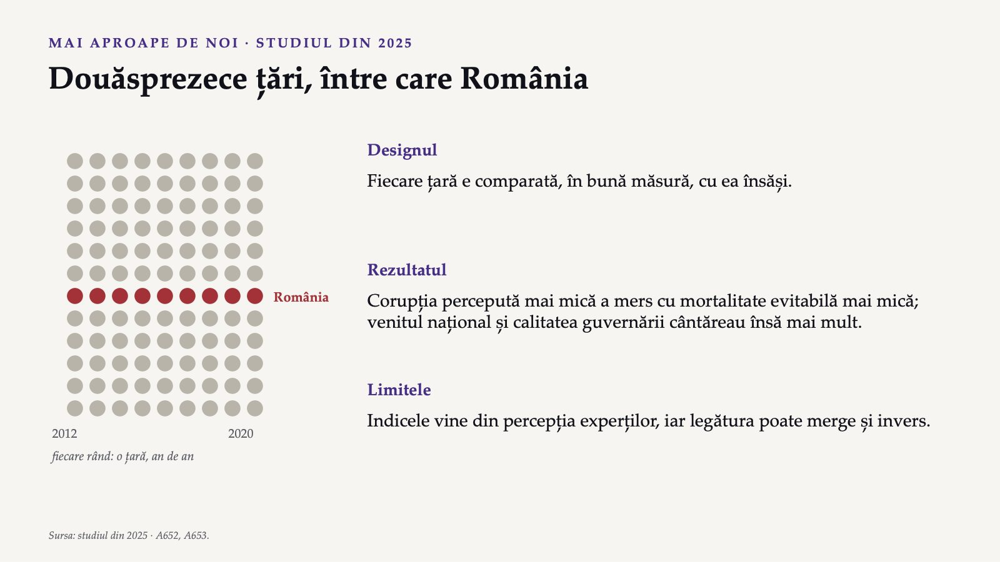
26 / 46Al treilea studiu îl știți din ședința a doua. Publicat în 2025, a urmărit douăsprezece țări din Europa Centrală și de Est, între care România, de la 2012 la 2020. Designul lui este mai puternic decât al lui Hanf într-un punct important: urmărește fiecare țară an de an și o compară, în bună măsură, cu ea însăși. Rezultatul: o corupție percepută ca mai mică mergea împreună cu o mortalitate evitabilă mai mică, dar venitul național și calitatea guvernării aveau legături mai puternice cu rezultatele decât corupția. Autorii notează că indicele se bazează pe percepția experților și că legătura poate merge și invers: oamenii mai bolnavi pot fi mai dispuși să ofere mită ca să primească îngrijire.
Trei studii, trei designuri
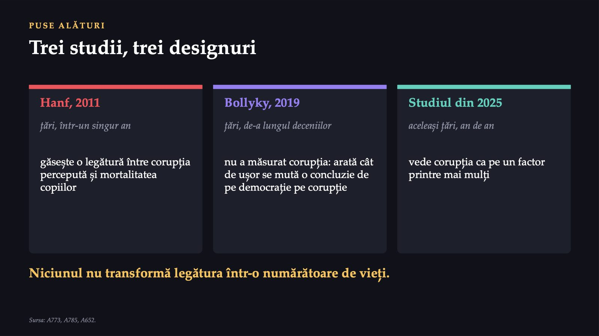
27 / 46Puse alături, cele trei studii spun ceva coerent. Două dintre ele, cu metode diferite, găsesc o legătură între corupția percepută și sănătate; al treilea arată cât de ușor se mută o concluzie de pe democrație pe corupție. Niciunul nu o transformă într-o numărătoare de vieți, iar cel mai recent o prezintă ca pe un factor printre mai mulți.
Trei titluri inventate
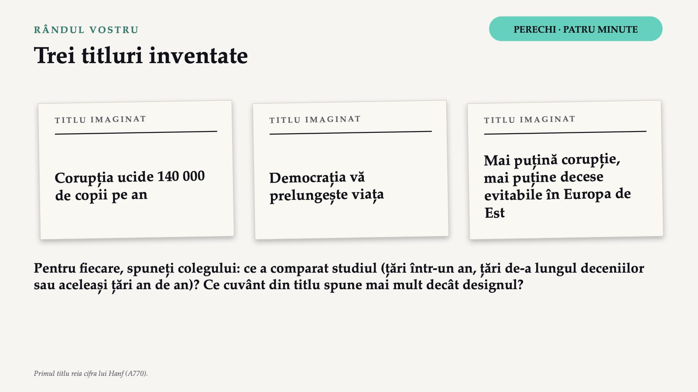
28 / 46Lucrați în perechi, patru minute. Iată trei titluri inventate pentru cele trei studii: „Corupția ucide 140 000 de copii pe an”, „Democrația vă prelungește viața” și „Mai puțină corupție, mai puține decese evitabile în Europa de Est”. Pentru fiecare, spuneți colegului ce a comparat studiul, țări într-un an, țări de-a lungul deceniilor sau aceleași țări an de an, și ce cuvânt din titlu spune mai mult decât designul.
Zece minute
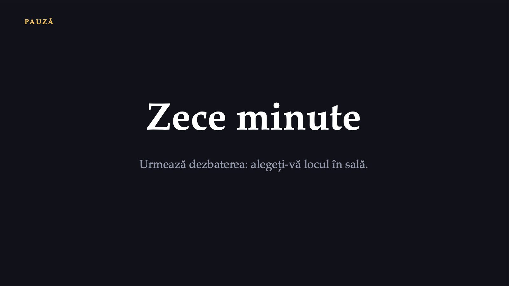
29 / 46Ne revedem în zece minute, pentru dezbatere.
„Corupția ucide, iar studiile o arată”
![DEZBATERE · DOUĂ TABERE DEZBATEREA · 20 DE MINUTE „Corupția ucide, iar studiile o arată” 1 Tabăra după locul în sală: o jumătate susține moțiunea, cealaltă se opune. 2 Trei minute de pregătire, cu vecinii de bancă. 3 Doi vorbitori pentru fiecare tabără, câte două minute. 4 La minutul 6, fiecare tabără primește un plic închis. În plic: un rezultat real, publicat, cu sursa și anul lui, care contrazice poziția taberei. Vorbitorii următori trebuie să-l folosească. Regulile de notare sunt cele din fișa disciplinei.](diapozitive/C04/030.jpg) 30 / 46
30 / 46Dezbaterea este felul în care exersăm, cu voce tare, ce am citit până acum. Regulile de notare sunt cele din fișa disciplinei. Sala se împarte în două tabere: o jumătate susține moțiunea „Corupția ucide, iar studiile o arată”, cealaltă se opune. Tabăra nu se alege după convingere, ci după locul în sală. Fiecare tabără are trei minute de pregătire, cu vecinii de bancă, apoi doi vorbitori pentru fiecare parte, câte două minute. La minutul șase, fiecare tabără primește un plic închis. Înăuntru este un rezultat real, publicat, cu sursa și anul lui, care contrazice poziția taberei. Vorbitorii următori trebuie să-l folosească: să-l explice, să-l pună în context sau să-și schimbe argumentul.
Care tabără a folosit mai bine dovezile, inclusiv plicul primit?
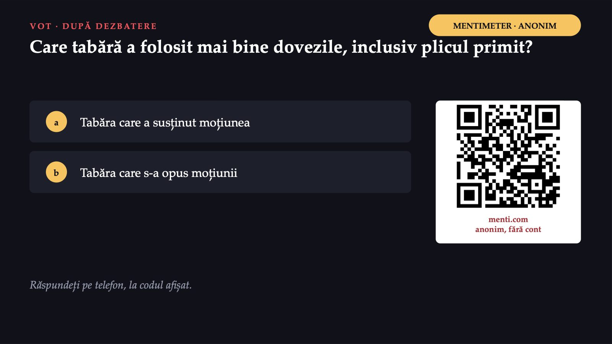
31 / 46Votați pe telefon, la codul afișat: care tabără a folosit mai bine dovezile, inclusiv plicul primit?
O dovadă care vă incomodează
![CE ERA ÎN PLICURI O dovadă care vă incomodează Pentru tabăra care susține Hanf însuși: estimare „aproximativă”, atribuire „indirectă”, date din 2008. Studiul din 2025: venitul și guvernarea cântăresc mai mult decât corupția. Pentru tabăra care se opune Același studiu din 2025: în douăsprezece țări, între care România, corupția percepută mai mică a mers cu o mortalitate evitabilă mai mică. Răspunsul provizoriu rămâne cel din ședința a doua: corupția poate costa vieți, iar mecanismele se pot descrie; câte vieți, nu știe nimeni. Sursa: A770, A651, A772, A652, A655.](diapozitive/C04/032.jpg) 32 / 46
32 / 46Ce era în plicuri? Pentru tabăra care susține moțiunea, propriile cuvinte ale lui Hanf: estimarea e aproximativă, atribuirea e indirectă, iar datele sunt dintr-un singur an, 2008. Și rezultatul studiului din 2025: venitul național și calitatea guvernării au legături mai puternice cu mortalitatea evitabilă decât corupția. Pentru tabăra care se opune, același studiu din 2025, citit din partea cealaltă: în douăsprezece țări din Europa Centrală și de Est, între care România, o corupție percepută mai mică a mers cu o mortalitate evitabilă mai mică. Exercițiul nu este să câștigați, ci să vedeți ce faceți cu o dovadă care vă incomodează. În meseria voastră, va fi rezultatul unui test care nu confirmă diagnosticul de care erați siguri. Corupția poate costa vieți, iar mecanismele prin care o poate face se pot descrie; câte vieți, nu știe nimeni.
≠
 33 / 46
33 / 46Valori ipotetice. Sunteți medic specialist, angajat al unui spital județean. De două luni, secția primește dezinfectant de la un furnizor nou. Pe fișele de livrare, concentrația substanței active este alta decât cea pe care ați văzut-o în caietul de sarcini, la o ședință a secției. Ați întrebat-o pe asistenta-șefă; v-a spus că „așa a venit de la achiziții”. Nu știți dacă cineva a luat bani. Nu știți dacă dezinfectantul e mai slab. Aveți doar două hârtii care nu se potrivesc. De data aceasta nu citiți o anchetă despre alții: sunteți în interiorul ei, la început, când nimeni nu știe încă nimic.
Ce faceți întâi?
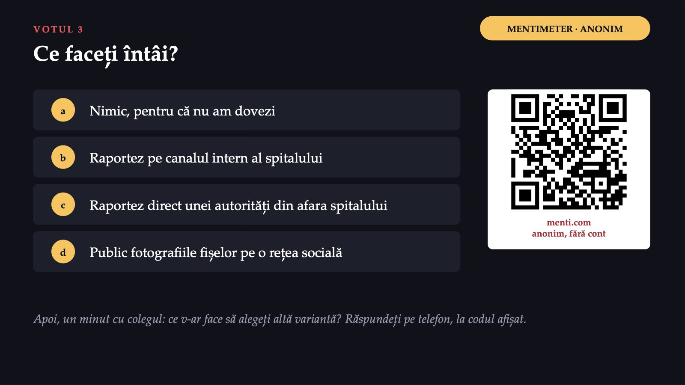
34 / 46Votați anonim, pe telefon, la codul afișat: ce faceți întâi? Nimic, pentru că nu aveți dovezi; raportați pe canalul intern al spitalului; raportați direct unei autorități din afara spitalului; sau publicați fotografiile fișelor pe o rețea socială. Apoi, un minut cu colegul: ce v-ar face să alegeți altă variantă?
Avertizorul în interes public
 35 / 46
35 / 46Al treilea termen nou: avertizorul în interes public. Legea nr. 361/2022 îl definește ca persoana fizică care efectuează o raportare sau divulgă public informații referitoare la încălcări ale legii, obținute în context profesional. În cuvinte de zi cu zi: cel care spune, pe căile prevăzute de lege, ce a văzut la locul de muncă și nu e în regulă. Trei lucruri contează pentru voi. Informația trebuie să vină din activitatea profesională. E vorba despre încălcări ale legii, iar printre domeniile numite sunt achizițiile publice, siguranța produselor și sănătatea publică. Și legea nu cere să fi dovedit ceva; cere motive întemeiate. Legea se aplică lucrătorilor, voluntarilor și stagiarilor, printre alții; medicul din caz, angajat al spitalului, este un lucrător.
Votul nu are un singur răspuns corect
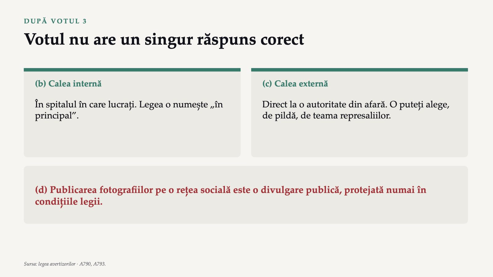
36 / 46Întoarceți-vă la vot. El nu are o singură variantă bună: legea vă lasă să alegeți între calea internă, varianta b, și cea externă, varianta c. Raportarea se face în principal pe canalul intern, dar avertizorul poate alege și poate ține cont, de pildă, de riscul de represalii sau de faptul că încălcarea nu poate fi remediată eficient în interior. Publicarea fotografiilor pe o rețea socială, varianta d, este o divulgare publică, protejată numai în condițiile legii, pe care le găsiți în note, la „Pentru curioși”.
Unde ajunge raportarea
![PE CE CALE · CINE PRIMEȘTE Unde ajunge raportarea Intern Orice spital public are canal intern; o clinică privată, de la 50 de angajați. Primește o persoană sau un compartiment desemnat, imparțial și independent. Extern Autoritatea din domeniu sau Agenția Națională de Integritate, care o poate trimite mai departe. În scris, prin telefon sau, la cerere, față în față. O raportare fără nume se examinează și ea, dacă are indicii despre încălcări ale legii. Sursa: legea avertizorilor · A789, A790, A791, A792, A794.](diapozitive/C04/037.jpg) 37 / 46
37 / 46Un spital public trebuie să aibă un canal intern, oricâți angajați ar avea. O clinică privată are aceeași obligație dacă are cel puțin 50 de angajați. Instituția desemnează o persoană, un compartiment sau un terț care primește raportările și trebuie să lucreze imparțial și independent. Pe calea externă, raportarea ajunge la autoritățile care se ocupă de domeniul respectiv sau la Agenția Națională de Integritate, care o poate trimite mai departe autorității competente. Raportarea poate fi făcută în scris, prin telefon sau, la cerere, față în față, iar raportarea fără numele celui care raportează se examinează și ea, dacă are indicii despre încălcări ale legii.
În cât timp trebuie spitalul să vă confirme primirea?
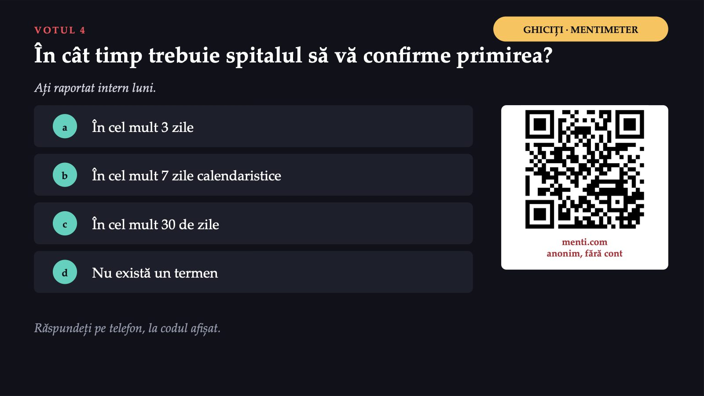
38 / 46Ghiciți și votați pe telefon, la codul afișat. Ați raportat intern luni. În cât timp trebuie spitalul să vă confirme primirea? În cel mult 3 zile, în cel mult 7 zile calendaristice, în cel mult 30 de zile sau nu există un termen?
(b) În cel mult 7 zile calendaristice
 39 / 46
39 / 46Varianta corectă este b: în cel mult 7 zile calendaristice. Pe calea internă, spitalul are două obligații de timp: confirmarea primirii raportării, în cel mult 7 zile calendaristice de la primire, și informarea voastră despre stadiul cercetării, în cel mult 3 luni de la confirmare sau, dacă nu ați primit confirmarea, de la expirarea celor 7 zile. Pe calea externă, Agenția Națională de Integritate trebuie să confirme primirea imediat, dar nu mai târziu de 7 zile calendaristice, și să vă informeze într-un termen rezonabil, de cel mult 3 luni sau, în cazuri justificate, de cel mult 6 luni de la primire.
Trei condiții, îndeplinite împreună
![CE VĂ PROTEJEAZĂ LEGEA Trei condiții, îndeplinite împreună 1 Legea vi se aplică, iar informația vine dintr-un context profesional. 2 Aveați motive întemeiate să credeți că informația era adevărată când ați raportat. 3 Ați raportat intern, extern sau prin divulgare publică. Represaliile sunt interzise: concedierea, reducerea salariului, evaluările negative, sancțiunile, hărțuirea. În instanță, angajatorul trebuie să dovedească alte motive; dacă le contestați, baroul vă asigură, la cerere, asistență judiciară gratuită. Sursa: legea avertizorilor · A796, A797, A798.](diapozitive/C04/040.jpg) 40 / 46
40 / 46Ca să beneficiați de protecție, trebuie îndeplinite împreună trei condiții: să fiți una dintre persoanele cărora li se aplică legea și să fi aflat informația într-un context profesional; să fi avut motive întemeiate să credeți că informația era adevărată în momentul raportării; și să fi raportat intern, extern sau prin divulgare publică. Legea interzice represaliile, adică orice măsură luată împotriva voastră din cauza raportării: printre ele, concedierea, reducerea salariului, evaluările profesionale negative, sancțiunile disciplinare, intimidarea și hărțuirea. Dacă le suferiți, le puteți contesta în instanță, iar acolo angajatorul trebuie să dovedească faptul că măsura a avut alte motive decât raportarea; dacă vreți să contestați represaliile, baroul vă asigură, la cererea voastră, asistență judiciară gratuită.
Limita cea mai importantă pentru un medic
![CE NU VĂ PERMITE LEGEA Limita cea mai importantă pentru un medic Ce vă scutește Raportând în condițiile legii, nu răspundeți pentru divulgarea informațiilor și nici pentru accesarea datelor din muncă, folosite ca să raportați. Ce rămâne în vigoare Confidențialitatea informațiilor medicale. Scrieți despre fișe, date de livrare și contracte, nu despre pacienți identificabili. Stabilit: cele două hârtii nu se potrivesc. Nestabilit: că cineva a furat. Sursa: legea avertizorilor · A799, A800, A803, A804.](diapozitive/C04/041.jpg) 41 / 46
41 / 46Cine raportează în condițiile legii și a avut motive întemeiate să creadă că raportarea era necesară nu încalcă, prin raportare, regulile despre divulgarea informațiilor și nu răspunde pentru ea. Nu răspunde nici pentru accesarea datelor pe care le are din muncă, dacă le-a accesat ca să raporteze. Legea păstrează însă explicit o limită: nu aduce atingere dispozițiilor privind confidențialitatea informațiilor medicale. Pentru un medic, aceasta este limita cea mai importantă: în raportarea despre dezinfectant scrieți despre fișe, date de livrare și contracte, nu despre pacienți identificabili. Relatarea voastră trebuie să rămână la ce ați văzut: este stabilit că cele două hârtii nu se potrivesc; nu este stabilit că cineva a furat.
Medicul raportează
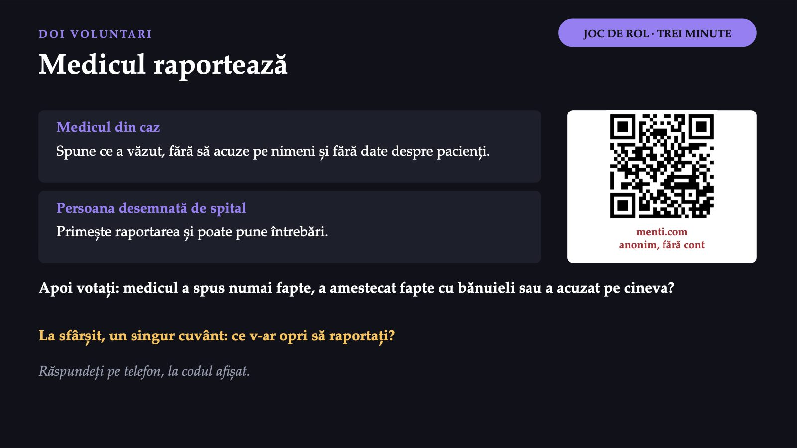
42 / 46Un joc de rol de trei minute, cu doi voluntari. Primul este medicul din caz. Al doilea este persoana desemnată de spital să primească raportările. Medicul spune ce a văzut, fără să acuze pe nimeni și fără să dea date despre pacienți; persoana desemnată poate pune întrebări. Apoi votați pe telefon: medicul a spus numai fapte, a amestecat fapte cu bănuieli sau a acuzat pe cineva? Încheiem cu un singur cuvânt despre ce v-ar opri să raportați.
Înainte să aveți nevoie
![CE ÎNSEAMNĂ PENTRU VOI, CA MEDICI Înainte să aveți nevoie 1 Aflați, din primul an de rezidențiat, cine primește raportările în spitalul vostru. 2 Scrieți ce ați văzut, cu date și documente, și păstrați confirmarea de primire. 3 Fără confirmare după 7 zile calendaristice, spitalul a depășit termenul legal. 4 Nu luați acasă dosare de pacienți și nu fotografiați foi de observație. Legea nu vă cere să dovediți fapta; vă cere să spuneți cinstit ce știți. Sursa: legea avertizorilor · A794, A796, A799, A803.](diapozitive/C04/043.jpg) 43 / 46
43 / 46Aflați, în primul an de rezidențiat, cine este persoana desemnată să primească raportările în spitalul vostru și cum se ajunge la ea. Nu în ziua în care aveți nevoie. Când raportați, scrieți ce ați văzut, cu date și documente, și păstrați confirmarea de primire. Socotiți termenele: dacă după 7 zile calendaristice nu ați primit confirmarea, știți că instituția a depășit termenul legal. Și nu vă transformați în anchetatori: nu luați acasă dosare de pacienți și nu fotografiați foi de observație, pentru că confidențialitatea informațiilor medicale rămâne în vigoare și pentru avertizori. Legea nu vă cere să dovediți fapta; vă cere să spuneți cinstit ce știți.
Ce faceți diferit de mâine
 44 / 46
44 / 46Ce faceți diferit de mâine. Înainte să citați un studiu, citiți-i metoda: pe cine a comparat, ce a măsurat, o dată sau în timp. Când vedeți „corupția ucide” sau orice alt titlu cu un verb de cauză, întrebați-vă ce a măsurat, de fapt, studiul din spatele lui. Nu folosiți un studiu ca dovadă pentru ceva ce nu a măsurat. Aflați cine primește raportările în spitalul în care faceți stagiul sau rezidențiatul. Și dacă raportați ceva, scrieți fapte, nu bănuieli, și lăsați pacienții în afara raportării.
Titlul, designul, avertizorul: zece întrebări
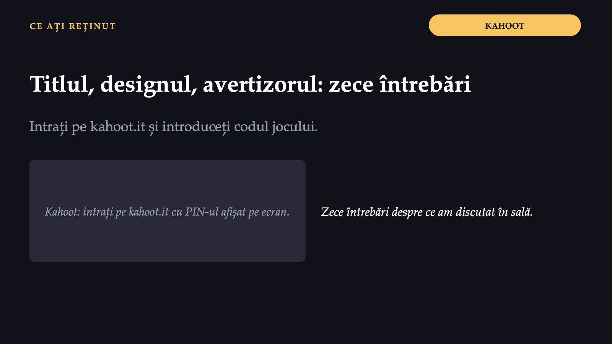
45 / 46Zece întrebări despre ce am discutat în sală.
Trei întrebări pentru final
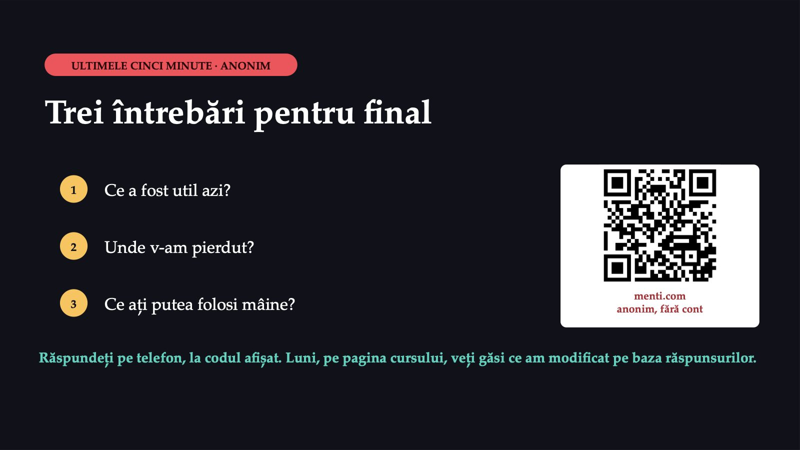
46 / 46Trei întrebări anonime, pe telefon, la codul afișat: ce a fost util azi, unde v-am pierdut și ce ați putea folosi mâine. Luni, pe pagina cursului, veți găsi ce am modificat pe baza răspunsurilor.
Săgeți sau spațiu: navigare · O: vedere de ansamblu · N: notele prezentatorului · F: ecran complet · Esc: închidere